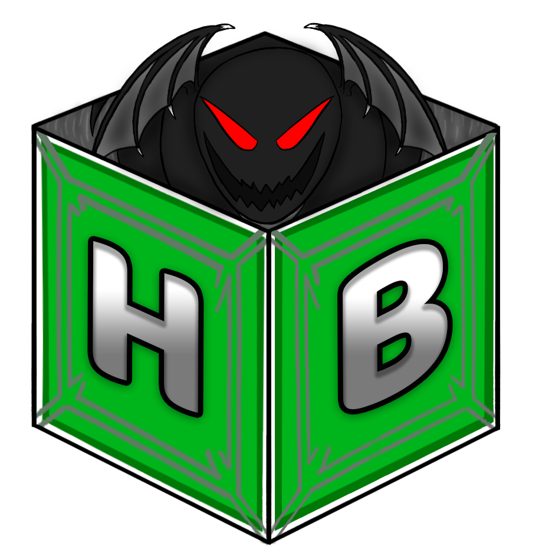
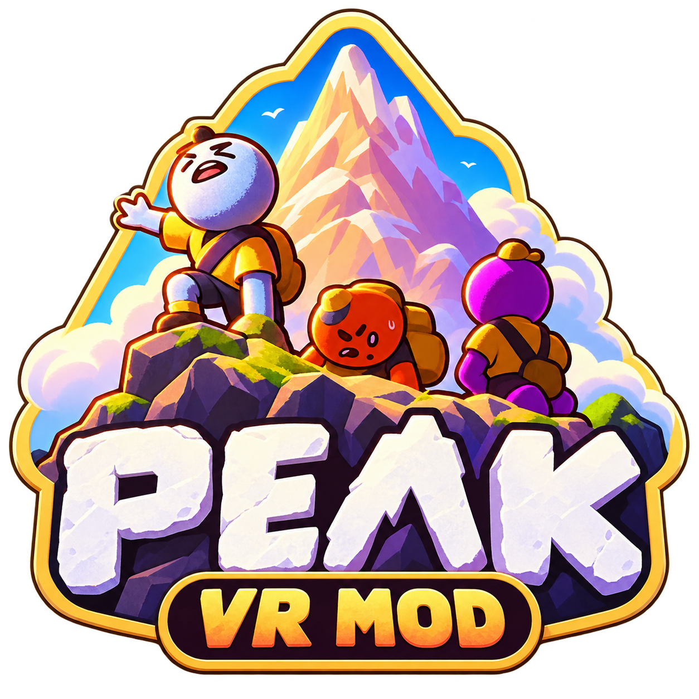
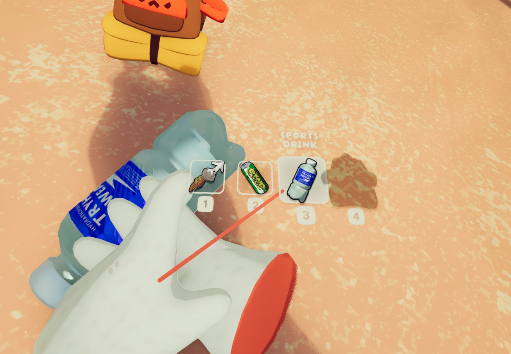
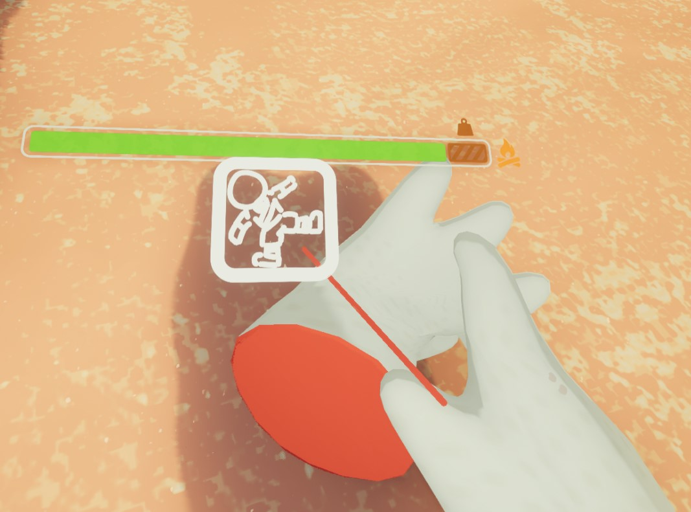
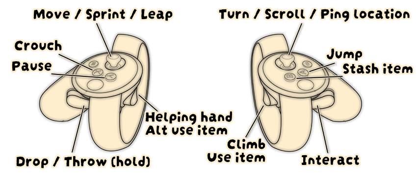

Physical climbing & interaction
Grab walls, ropes, vines, chains, items and other interactables with VR-focused hand logic. Letting go of your grip releases what you are actually holding.
Grip-based climbingTwo handsPhysical release

HavocBoxMedia Mods & interactive projects GitHubA PCVR conversion focused on natural motion controls, physical interaction, readable in-headset UI, controller-aware bindings, and creator-friendly camera tools.

Made by SabSnake. Published by HavocBoxMedia. Built to make PEAK feel like a native room-scale PCVR game rather than a flat game with a headset attached.
See what’s included →Controls and interactions adapt around the headset/controller family instead of forcing one layout onto every device.
Grab walls, ropes, vines, chains, items and other interactables with VR-focused hand logic. Letting go of your grip releases what you are actually holding.
Physical throws scale from light to heavy based on how fast you actually move your hand. Hard swings can send coconuts and other items with real force.
Valve Index trackpad shortcuts and Quest/Touch-style thumbstick fallbacks are handled separately, with controller icons shown in-game.
VR-friendly inventory access, backpack interaction, physical item slots and a free-hands fallback so you can quickly get your hands clear.
Dedicated VR settings, control guide, comfort options and rebind support with explicit “None” assignments when you want a control disabled.
Custom 16:9 capture camera, centered view, FOV controls, camera POV quick-select, and options for whether VR menus appear in your OBS output.



The Havoc installer finds your PEAK folder, installs the required files, and can be reused later to update the mod.
Download installerGrab the latest PEAK VR Mod installer from GitHub Releases.
Run it and confirm the detected PEAK game folder.
Connect your PCVR headset and make sure SteamVR is running.
Start PEAK normally through Steam and jump into VR.
PEAK VR Mod is part of a bigger push to build game mods, tools and experimental projects under HavocBoxMedia. Patreon will be used for development updates, previews and optional supporter perks.
Mod development: SabSnake
Published by: HavocBoxMedia
Inspired / based on: PEAKVR by Andrey04o
Unofficial community mod. Not affiliated with PEAK’s developers or publisher.